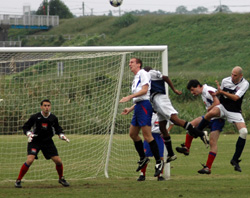
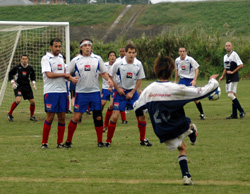

|
Misato, Sun 1st Oct. An impressive performance against a temperamental France FC team saw BFC emerge victors earning themselves their first victory of the season following a string of draws against TML’s stronger teams. The game was full of incident and concluded on the wet grass at Misato with the French reduced to 9-men and flamboyant referee Pietro Cristo vowing never to officiate another TML game again.
BFC started the game poorly failing to clear their lines on the slippery surface and the French were gifted the first goal of the game with a simple tap-in that left BFC keeper Beef Jryki little chance. This was enough to awaken the sleeping beast that was BFC and in an instant the team responded, playing two-touch football out of the back and hitting the strikers on the move from midfield – Al Himmer holding up the ball well, shrugging off defenders and laying off simply to the overlapping runners.
25-minutes into the game and midfield dynamo Pablo Pomares’ mazy run into the box was abruptly ended by the French keeper wrapping his arms lovingly around Pablo’s well-toned legs. Having pushed the ball (well) past the keeper the referee had no choice but to point to the spot (actually he did have a choice, but pointed to the spot anyway – and quite rightly too, I (ahem) hasten to add). Dr. Philip Lowes stepped up and masterfully steered the ball into the bottom left-hand corner of the goal and out of reach of the French keeper, who in fairness had dived the right way.
The French number 19, already on a yellow for a reckless challenge moments earlier proceeded to berate the referee following the penalty decision and his dissent and ‘excessive actions’ towards the referee led to him being removed from the game and facing sanctions from the TML Committee.
Just before the break some neat possession play between Jon Day and the in-form Neil Collins on the right hand side, created enough time and space for Jon to pick out Shosuke from 40-yards in full-flight. Shosuke, off-balance on the slick surface, did remarkably well to guide the ball back across the goal from the left and into the bottom right corner – the goal a testament to the sheer quality of BFC’s gifted new recruit.
The second half saw the French pressing forward but the BFC defense in the forms of Ryo, Phil, Jon B, James M and later on Brian Doyle (himself looking extremely comfortable at left back…) stood their ground, soaking up the aerial threats and distributing simply and effectively to a lively midfield, the liveliest being Shosuke and Pink Neil both of whom reeked havoc on the flanks. A quick short corner from Shosuke saw Evans whip in a devastatingly accurate out-swinging cross to the far post, that was met expertly on the volley by Ryo – his instep guiding the ball firmly into the roof of the net. 3-1.
With 20-minutes left on the clock BFC thought the game was in the bag – as well it should’ve been, but a speculative drive hit from well outside the BFC area kicked up off the moist turf and struck Evans’ unsuspecting hand. Pietro didn’t hesitate in pointing to the spot, which the French dutifully converted. However BFC wasted no time in stamping their authority on the game with Evans playing a quick ball out from the back to Jon Day who found himself in acres of space and advanced at breakneck speed into the French half. With an array of BFC players camped out in the French box, James Morson was selected as the recipient of a low curling cross, played expertly behind the back four. James with only a minor adjustment to his well-timed forward run, stroked the ball into the back of the net with an air of nonchalance and technical prowess rarely seen at this level. 4-2. BFC had a medley of clear-cut chances to extend their lead, including a penalty that saw the ball rise off the deck as if filled with helium and then rifle off the top of the crossbar, but failed to convert. The game stayed at 4-2 and before the final whistle the France number 12 thought it a good idea to chuck the ball into the face of the player he had just been cautioned for wrestling belligerently to the floor and was justly dismissed.
Following the incidents of violence towards players and referee and the general unsporting behavior that took place during the game, referee Pietro Cristo stated unequivocally that he would no longer officiate TML games – for this league to continue we need referees like Pietro to not feel threatened or be on the receiving end of torrents of abuse on or off the field of play. As players we shouldn’t accept it and the league itself certainly won’t tolerate such indecent and unsporting behavior.
Report by BFC
|